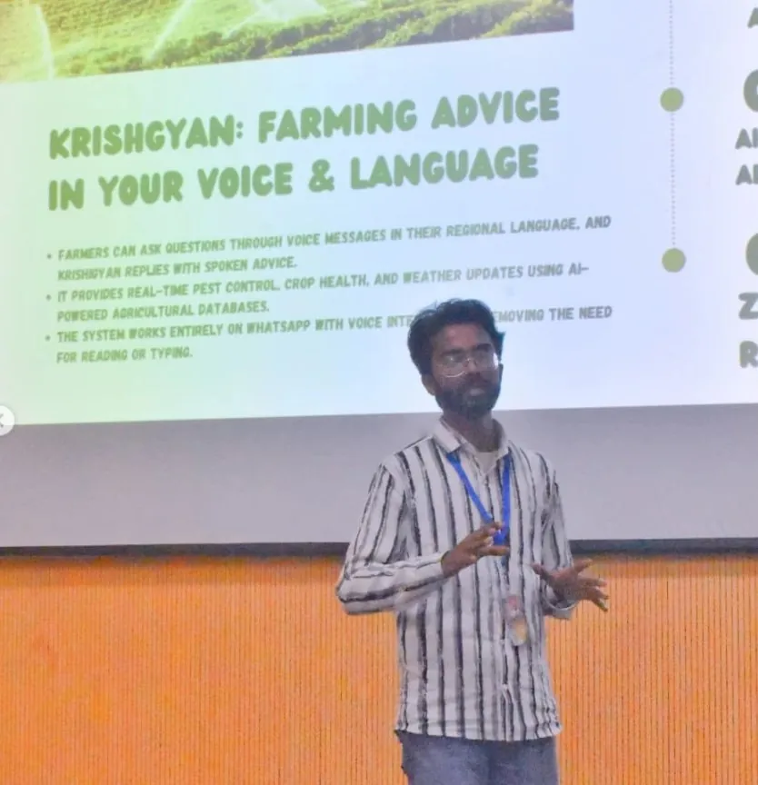
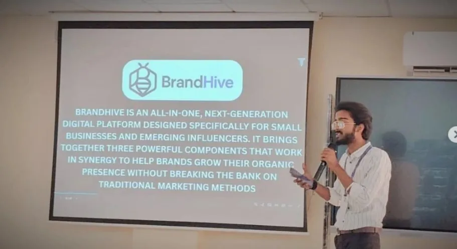
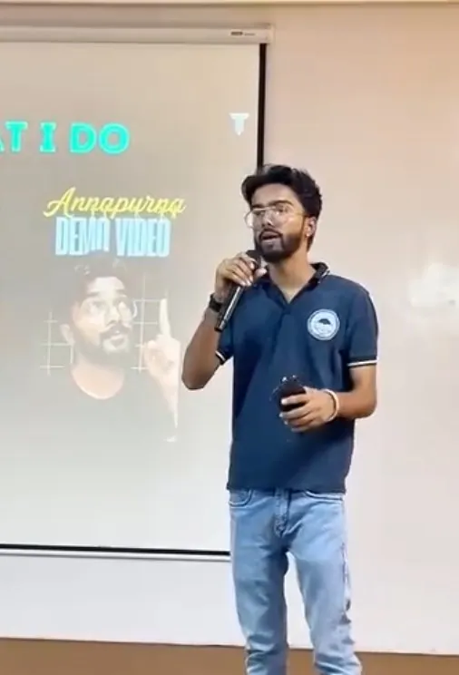
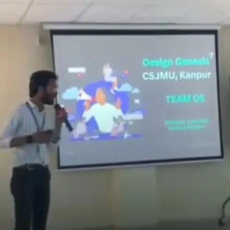

Every win below was a shipped product pitched in a room, with Raman Shukla and Saksham Gupta beside me as Team TechVerse.

An AI agribot that gives farmers real-time guidance in their own voice and language over WhatsApp. Pest control, crop health and weather, no typing needed.

A startup pitch for an all-in-one digital platform for small businesses and new influencers, presented to the Vice Chancellor, Prof. Vinay Kumar Pathak.

A real-time food-sharing platform connecting donors and NGOs, built and demoed against 15+ teams and 60+ participants.

A system-driven platform against generational poverty, "BAL. BUDDHI. VIDYA." We had the product. On stage we had two minutes. I kept shipping it at strot.in.
Top 3 at an IIT Kanpur hackathon · 1st runner-up, Cyber Security Awareness, VSICS · 2nd runner-up, 'Perspectives Unleashed' debateall 2025